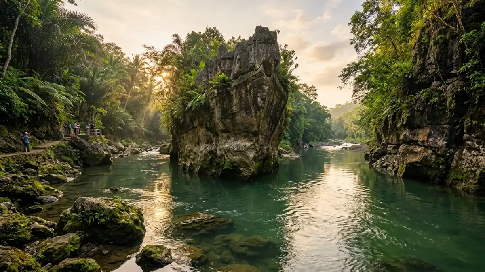
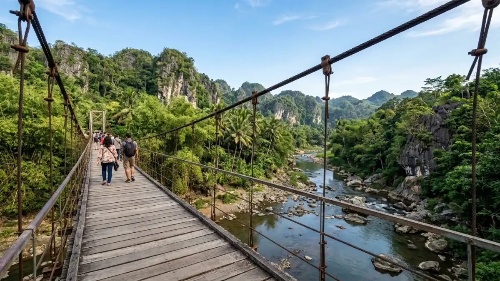

Ilustrasi formasi batu besar berbentuk kapal di tengah Sungai Opak, daya tarik utama Taman Wisata Batu KapalTaman Wisata Batu Kapal adalah destinasi alam di tepi Sungai Opak, Piyungan, Bantul, yang menawarkan dua batu besar berbentuk kapal, hutan bambu, jembatan gantung, river tubing, dan camping ground dengan tiket masuk seikhlasnya.
- Apa Itu Taman Wisata Batu Kapal?
- Dimana Lokasi Taman Wisata Batu Kapal dan Bagaimana Rutenya?
- Berapa Harga Tiket Masuk Taman Wisata Batu Kapal?
- Kapan Jam Buka Taman Wisata Batu Kapal?
- Apa Saja Wahana dan Daya Tarik di Taman Wisata Batu Kapal?
- Apa Saja Fasilitas yang Tersedia di Lokasi?
- Kesalahan Umum Saat Berkunjung ke Taman Wisata Batu Kapal
- Tips Berkunjung ke Taman Wisata Batu Kapal
- Kesimpulan
Apa Itu Taman Wisata Batu Kapal?
Taman Wisata Batu Kapal adalah kawasan wisata alam di pinggir Sungai Opak yang namanya diambil dari dua batu besar menyerupai bentuk kapal di tengah aliran sungai.
Kawasan ini sebelumnya berupa lahan tidak terawat, kemudian dibersihkan dan dikembangkan oleh warga setempat sejak Juni 2020 hingga berkembang menjadi destinasi wisata alam yang dikenal luas.
Selain formasi batu, kawasan ini dikelilingi rimbunnya hutan bambu yang memberikan suasana teduh sepanjang hari.
Suara aliran sungai, gesekan daun bambu, dan kicau burung liar menjadi daya tarik utama bagi pengunjung yang mencari suasana alam yang tenang, berbeda dari destinasi wisata komersial pada umumnya.
Taman Wisata Batu Kapal juga pernah menjadi lokasi syuting salah satu film horor populer di Indonesia, yang turut mendorong popularitasnya di media sosial pada masa awal pembukaannya.
Dimana Lokasi Taman Wisata Batu Kapal dan Bagaimana Rutenya?
Taman Wisata Batu Kapal berlokasi di Jalan Klenggotan, Srimulyo, Piyungan, Kabupaten Bantul, Daerah Istimewa Yogyakarta, sekitar 30 menit berkendara dari pusat Kota Yogyakarta.
Rute yang umum digunakan adalah menyusuri Jalan Wonosari-Jogja, kemudian berbelok ke arah Pasar Wage.
Dari titik ini, pengunjung mengikuti petunjuk arah Gapura Klenggotan di sisi kanan jalan, lalu masuk ke arah utara hingga sampai di lokasi.
Sebagian jalan menuju lokasi berupa jalan kampung dengan kondisi cor beton dan sedikit menurun menjelang area parkir, sehingga disarankan menggunakan kendaraan yang nyaman untuk medan tersebut.
Kawasan ini juga berdekatan dengan beberapa destinasi lain di Piyungan, seperti Gunung Wangi dan jembatan gantung Kalijogo, sehingga bisa dijadikan satu rangkaian perjalanan wisata dalam satu hari.
Berapa Harga Tiket Masuk Taman Wisata Batu Kapal?
Tiket masuk Taman Wisata Batu Kapal bersifat gratis atau seikhlasnya melalui donasi sukarela, sementara biaya lain seperti parkir kendaraan tetap dikenakan secara terpisah.
Sumbangan sukarela dapat diberikan di kotak donasi yang berada di area loket, yang juga menjadi titik informasi bagi pengunjung.
Selain donasi masuk, pengunjung perlu menyiapkan biaya tambahan untuk parkir kendaraan, camping, dan river tubing sesuai paket yang dipilih.
Berikut gambaran umum biaya di lokasi:
| Jenis Biaya | Perkiraan Tarif |
|---|---|
| Tiket Masuk Objek Wisata | Gratis atau Seikhlasnya |
| Parkir Sepeda Motor | Sekitar Rp2.000 per motor |
| Parkir Mobil | Sekitar Rp5.000 per mobil |
Karena tarif tidak ditetapkan secara resmi oleh pemerintah daerah, angka di atas dapat berubah sewaktu-waktu dan sebaiknya dikonfirmasi ulang saat kunjungan.
Kapan Jam Buka Taman Wisata Batu Kapal?
Taman Wisata Batu Kapal buka setiap hari, termasuk saat libur nasional, mulai pukul 07.30 hingga 17.30 WIB.
Jam operasional ini berlaku konsisten sepanjang minggu, sehingga pengunjung dapat datang kapan saja selama masih dalam rentang waktu tersebut.
Waktu kunjungan yang disarankan adalah pagi hari atau menjelang sore, karena suhu udara lebih sejuk dan pencahayaan alami lebih mendukung untuk berfoto di sekitar sungai dan bebatuan.
Apa Saja Wahana dan Daya Tarik di Taman Wisata Batu Kapal?
Daya tarik utama Taman Wisata Batu Kapal adalah formasi dua batu besar berbentuk kapal di tengah Sungai Opak, dilengkapi wahana river tubing, camping ground, dan jembatan gantung sepanjang sekitar 20 meter dengan ketinggian sekitar 5 meter dari permukaan sungai.
Beberapa daya tarik yang bisa dinikmati pengunjung antara lain:
- Batu kapal, formasi dua batu besar yang menjadi ikon utama lokasi ini.
- Aliran Sungai Opak yang relatif jernih dengan lingkungan sekitar yang masih alami.
- Hutan bambu rimbun yang menciptakan suasana teduh dan asri.
- Jembatan gantung yang menghubungkan dua sisi sungai, sekaligus menjadi spot foto favorit.
- Aktivitas river tubing menggunakan ban pelampung dan pelampung keselamatan.
- Camping ground di tepi sungai untuk wisatawan yang ingin bermalam di alam terbuka.
- Berbagai spot foto alami dengan latar sungai, bebatuan, dan hutan bambu.

Ilustrasi jembatan gantung yang menghubungkan dua sisi sungai di Taman Wisata Batu KapalApa Saja Fasilitas yang Tersedia di Lokasi?
Fasilitas di Taman Wisata Batu Kapal mencakup mushola, toilet, area parkir, warung kuliner, perlengkapan river tubing, camping ground, dan persewaan tenda yang dikelola warga setempat.
Awalnya kawasan ini dikelola secara swadaya oleh masyarakat sekitar, kemudian mendapat dukungan tambahan dari pemerintah desa dalam pengembangan fasilitas umum.
Warung-warung di lokasi dikelola langsung oleh warga, menawarkan makanan dan minuman dengan harga terjangkau sekaligus membuka peluang ekonomi bagi masyarakat setempat.
Kesalahan Umum Saat Berkunjung ke Taman Wisata Batu Kapal
Kesalahan paling umum saat berkunjung adalah tidak mengecek kondisi debit air sungai sebelum melakukan river tubing, serta datang tanpa alas kaki yang sesuai untuk medan berbatu dan jalan menurun.
Beberapa hal yang perlu diperhatikan agar kunjungan lebih nyaman:
- Tidak memeriksa cuaca dan kondisi debit air sungai, yang dapat memengaruhi keamanan aktivitas river tubing.
- Menggunakan alas kaki yang licin atau tidak sesuai untuk medan berbatu dan jalan kampung yang menurun.
- Tidak membawa uang tunai untuk donasi masuk, parkir, dan pembelian di warung, karena transaksi digital belum tentu tersedia di seluruh titik.
- Datang pada siang hari saat cuaca terik, sehingga kurang nyaman untuk aktivitas luar ruangan dalam waktu lama.
- Membuang sampah sembarangan di area sungai dan hutan bambu, yang dapat merusak kelestarian kawasan.
Tips Berkunjung ke Taman Wisata Batu Kapal
Tips utama agar kunjungan lebih nyaman adalah datang di pagi hari, membawa pakaian ganti untuk river tubing, dan mengonfirmasi kondisi wahana kepada pengelola sebelum beraktivitas di sungai.
Beberapa tips tambahan yang dapat dipertimbangkan:
- Datang pada pagi hari agar suasana lebih tenang dan pencahayaan lebih baik untuk berfoto.
- Membawa pakaian ganti dan perlengkapan pribadi jika berencana mengikuti river tubing.
- Menyiapkan uang tunai pecahan kecil untuk donasi, parkir, dan biaya wahana.
- Menggunakan alas kaki tertutup yang tidak licin untuk berjalan di area berbatu.
- Menggabungkan kunjungan dengan destinasi terdekat seperti Gunung Wangi atau jembatan gantung Kalijogo agar perjalanan lebih efisien.
Kesimpulan
Taman Wisata Batu Kapal cocok dikunjungi oleh wisatawan yang mencari suasana alam sederhana di Bantul dengan biaya masuk yang ringan.
Datang pada pagi atau sore hari, siapkan uang tunai untuk donasi dan wahana, serta perhatikan kondisi sungai sebelum mengikuti river tubing agar kunjungan berjalan aman dan nyaman.
FAQ